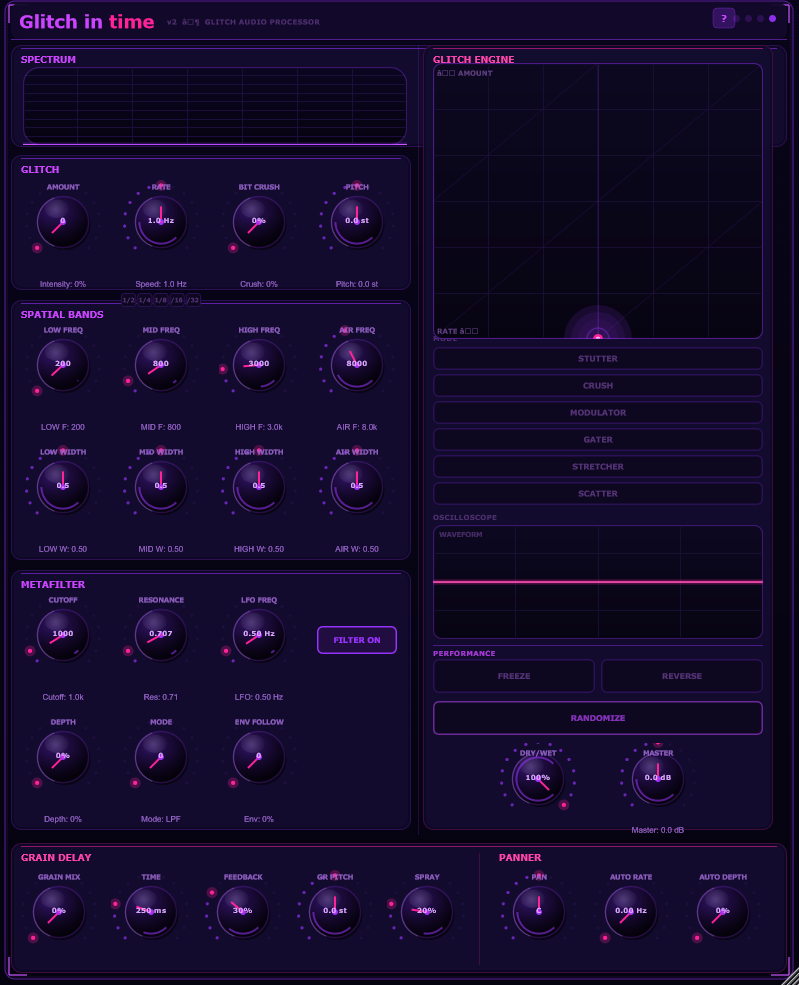

// BOUTIQUE AUDIO SOFTWARE
Real-time glitch, stutter & texture engine — VST3 · Standalone · Win64

▲ The real plugin. Move your cursor over it.
VST3 + Standalone · 64-bit · ~5 MB · Windows 10/11
— downloads & counting
Unsigned installer — SmartScreen may warn on first run: More info → Run anyway.
Bug report, feature request, or just want to share what you made? Transmit a signal.